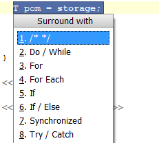

Some intentions are only applicable to a selected code region, e.g. to wrap code inside a try-catch block. These are called Surround With intentions and once you select the desired block of code, press &shortcut:SurroundWith; to show the list of applicable intentions.
